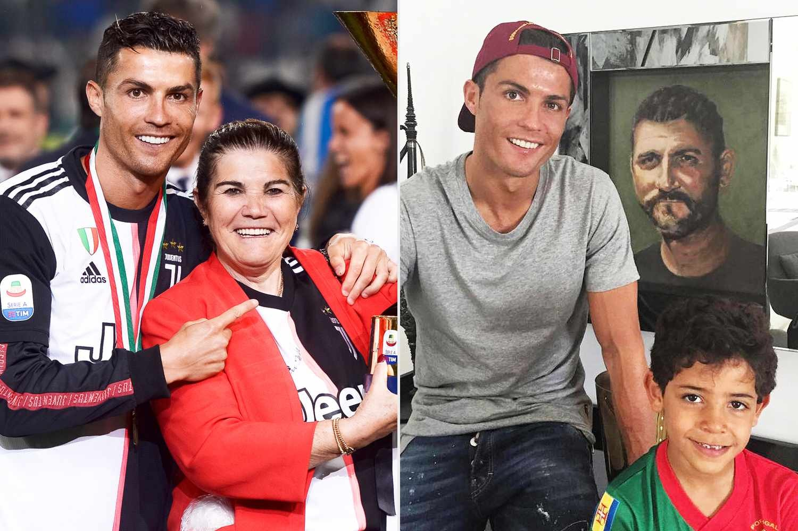

Abandoned His Surname — Dropped Aveiro, Stole 'Ronaldo'
The real surname revealed: Most fans call him 'CR7'; few ever ask what his actual surname is. His full name is Cristiano Ronaldo dos Santos Aveiro. The true paternal surname is 'Aveiro' — not the 'Ronaldo' everyone assumes.
The middle-name truth: 'Ronaldo' is merely his middle name, not a family surname. By Portuguese naming convention the correct abbreviation would be CA7 (Cristiano Aveiro), not the universally known CR7. The title the world has yelled for two decades is a middle name sitting where the surname should be.
The Reagan connection: The origin of 'Ronaldo' is stranger still — his father José Dinis Aveiro was a diehard fan of former US president Ronald Reagan, particularly his early Hollywood films, and so gave his youngest son the middle name 'Ronaldo'. A Portuguese footballer, named after an American actor-turned-president.
Dumping the paternal surname: In his commercial branding and public image, Ronaldo has all but dumped his real paternal surname 'Aveiro', building the middle name 'Ronaldo' into a global IP instead. From the CR7 trademark to the chain of hotels, the real surname is deliberately marginalised — commercial calculation or identity reinvention, take your pick.
Brand reinvention: Choosing 'Ronaldo' over 'Aveiro' is plainly the more resonant, more international brand strategy. 'Aveiro' is hard to pronounce and barely registers beyond the Portuguese-speaking world; 'Ronaldo' trips off the tongue and travels globally. Sacrificing the family surname for commercial gain is, in critics' eyes, textbook utilitarianism.
Family estrangement: The deeper reading is that Ronaldo's ties to his father's side of the family were never strong — his father died of alcoholism when he was 20, and relations were complicated. Going by the middle name also diluted the link to the Aveiro bloodline; the naming choice reflects a subtle attitude toward the family.
Name versus reality: When a superstar's real name and public perception point in opposite directions — the world shouts a 'surname' that is actually a middle name, the real surname is barely known, and the abbreviation CA7 is recognised by no one — the identity marketing is a marvel of modern sports business. Being called the wrong name by the whole world, and enjoying it, is a 'dark-history' footnote in itself.